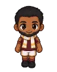

Wiki › Lugares › Doha — Cidade das Dunas
Doha — Cidade das Dunas
Doha Nível dos adversários: 68–72
Como chegar
✈️ Avião (a partir do nível 62)
🧭 Viagem: ✈️ Pegue o avião para Doha, Catar (a partir do nível 62) — no Brasil, o aeroporto fica na Cidade, com a Comissária Luana.
🧭 Caminho: a viagem já deixa você lá.
Adversários aqui (4)
| Nome | Nível | XP | O que deixa cair | |
|---|---|---|---|---|
| Sentinela do Oásis ×3 | 68 | 3.052 | ||
| Vento do Deserto ×3 | 68 | 2.289 | ||
| Maga da Miragem ×3 | 68 | 2.543 | ||
 | O Falcão do Deserto Chefão | 72 | 114.040 |
Personagens aqui
Saídas para
🎯 Oásis das Dunas · Estádio Jassim bin Hamadd · 🎯 Palácio das Miragens
Placas
🐪 DUNAS DOURADAS · 🦅 FALCOARIA · ⭐ PRAÇA DO CORNICHE · 🏺 SOUQ WAQIF · 🌴 CORNICHE · 🎯 ÁREA DE CAÇA: Oásis das Dunas · 🏛️ ESTÁDIO JASSIM BIN HAMADD · 🏛️ MUSEU DE ARTE ISLÂMICA · 🏋️ CENTRO DE TREINAMENTO · 🎯 ÁREA DE CAÇA: Palácio das Miragens